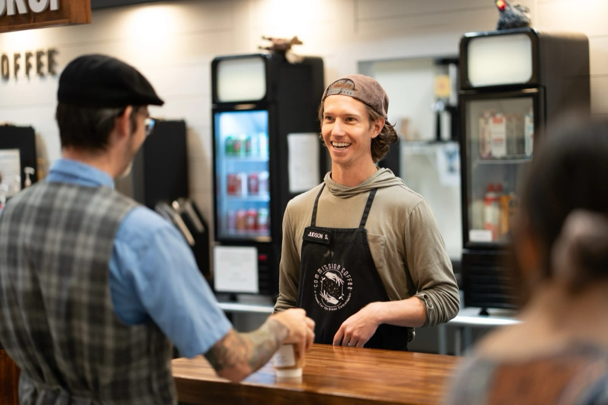
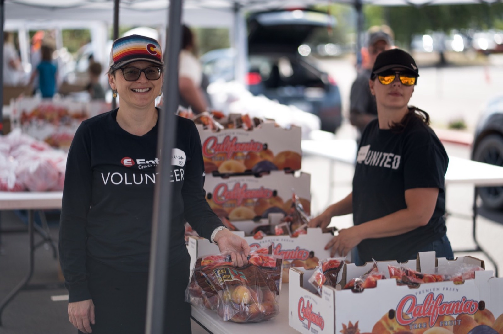
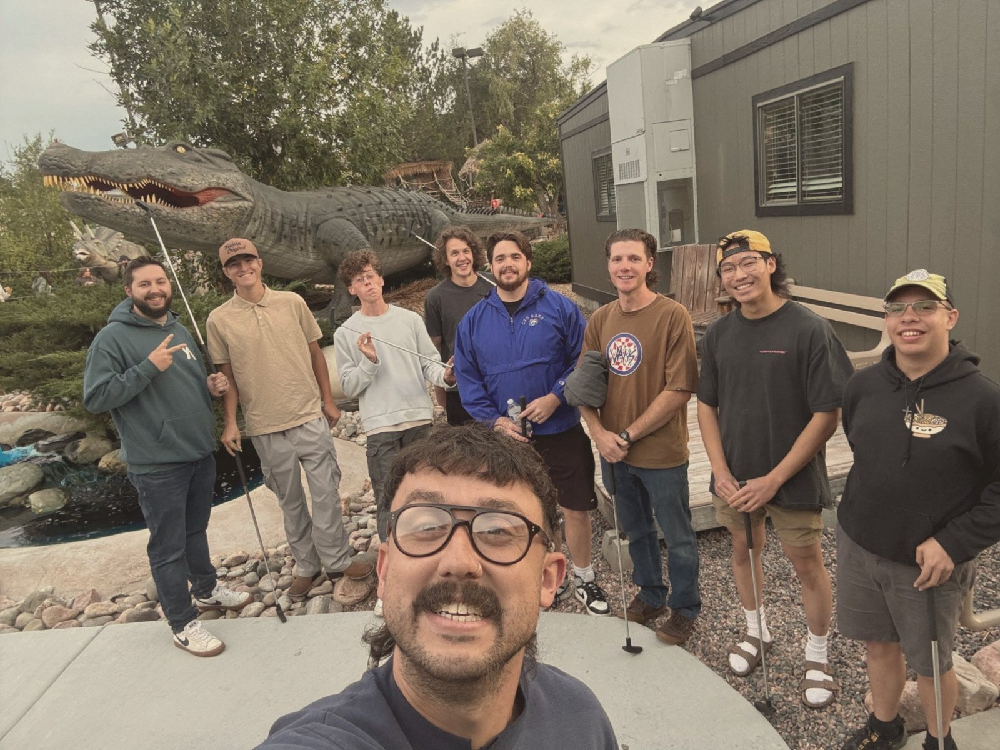

Following Jesus Together
Walking with Jesus is a lifelong journey best experienced in community. Together, we celebrate victories, share burdens, and encourage one another to keep our eyes on Him. By gathering in worship, studying Scripture, and serving side by side, we grow stronger in faith and in unity, reflecting the love of Christ to the world around us.



Join a Group
A place for you and your family to grow in your faith.
None of us desires to be an island. Connecting with like-minded friends is vital for our growth as Christ-followers. That’s why we provide a variety of groups from which to choose. Whether you need a small group Bible study, a shared hobby group, somewhere to serve, or an outreach opportunity, we’ve got a place for you. Check out our Connect Groups below and join the rest of us as we walk out this journey together as friends.
-
Adult
Home groups, Bible studies and support groups for adults.
View Groups -
Co-Ed Activity
Shared hobbies and activities for men and women together.
View Groups -
Family
Groups for couples, parents and the whole family.
View Groups -
Men
Prayer, Bible study, mentorship and breakfast with other men.
View Groups -
Women
Bible studies, home groups and activity groups for women.
View Groups -
Young Adult
Clubs and groups for young adults, from coffee to hiking.
View Groups -
View All Groups
All Groups
Browse every Connect Group and filter by meeting day, time and area of town.

Young Adults Clubs
Besides Fridays at 7PM in the Garage, Springs Young Adults have clubs you can jump into any time.
- Coffee
- Hiking
- Books
- Board Games
- Supper Clubs
How Groups Work
What are Connect Groups?
Connect groups are small gatherings of individuals from our congregation who meet regularly for community. They are diverse in their purpose, times/locations, and demographic. Some are focused on Bible study, prayer, and growing in your faith. Others simply provide fellowship through a common hobby or similar interests.
How do I join a group?
Scroll through the various Connect Groups to find what you desire most from a group. Then contact that group leader to see if they have openings and when, where, and how often they meet. It might be in their home, a restaurant, at the church, even in a park. We understand that sometimes you need to visit 3-4 groups to find a good fit before you settle in.
Can I switch groups or join more than one?
Yes, you can switch groups or shop around. We ask that you advise your current group leader so they know you intend to leave. We have many people who belong to more than one small group. Please choose groups that meet at different times so you can be faithful in your attendance.
Can I bring children or visitors?
Check with the specific group leader to see if they provide childcare. Some groups are age-specific or closed to one-time visitors.
Still have a question? Email info@springs.church or call (719) 488-8331.
Lead a Group
If you feel called to help others grow in their faith, we’d love for you to take the next step in leading a group.
What are the qualifications to lead a group?
- We ask leaders to make Springs Church your home church where you regularly attend, agree with our doctrine, and support the church through giving.
- We like potential leaders to be attending at least six months to a year, depending on the type of group you want to lead.
- All leaders need to complete the church membership process.
- There is an application and interview that allows you to share your spiritual life and calling with us.